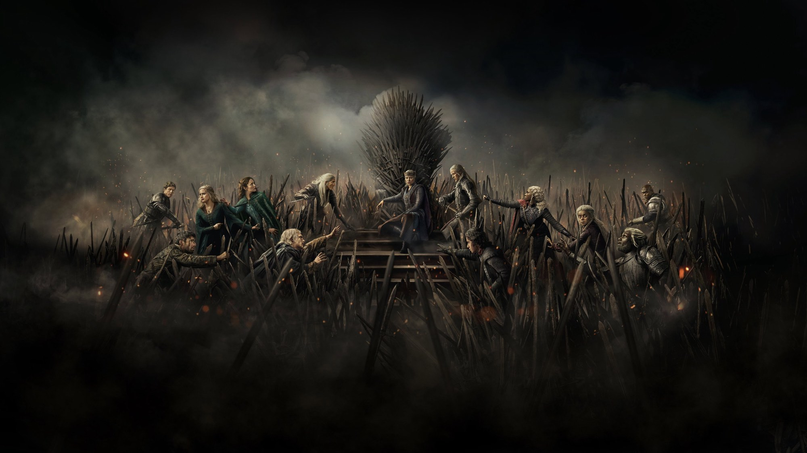
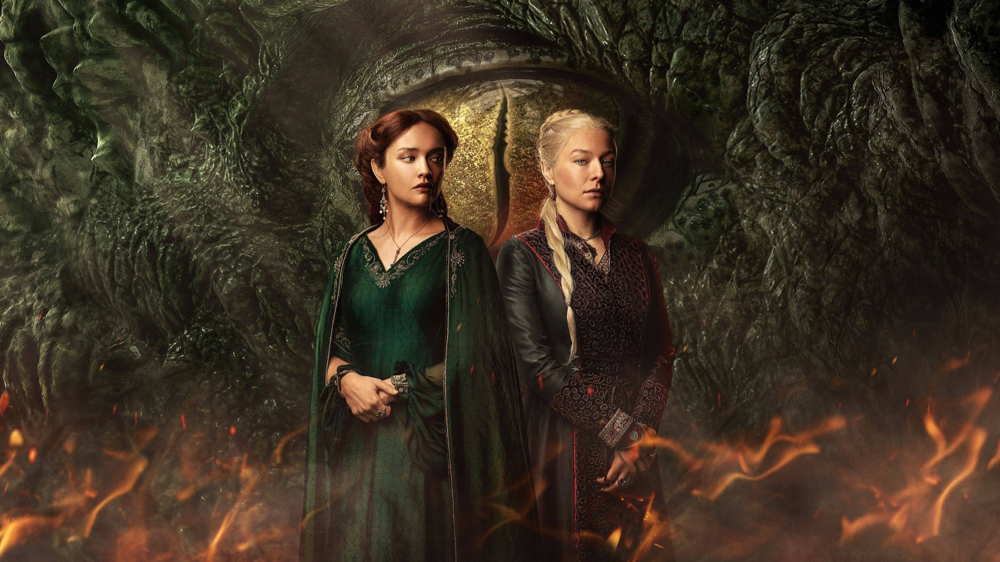
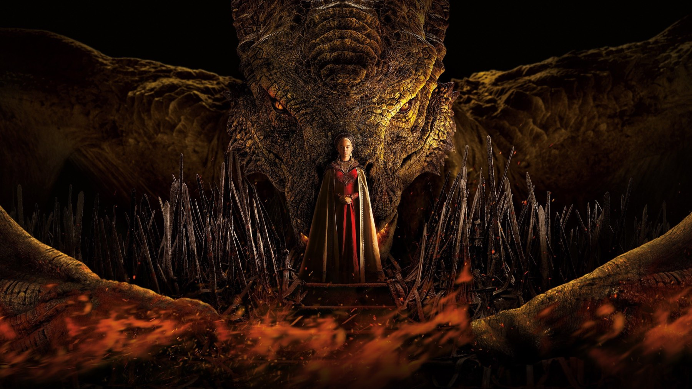

House of the Dragon – Stagione 2
Il quarto episodio è tra le cose più belle mai girate per la serie, il finale è il punto più basso. In mezzo, una guerra che si prepara e non arriva
Di tutte le stagioni di House of the Dragon, la seconda è quella che prepara di più e racconta di meno. Comincia con un bambino ucciso nel suo letto e finisce con due eserciti che si mettono in marcia senza incontrarsi. In mezzo c'è uno degli episodi più belli della serie, però anche la sensazione, sempre più forte di settimana in settimana, di assistere ai preparativi di qualcosa che non arriverà. Per questo la consideriamo la più debole delle tre.
Di cosa parla la seconda stagione
Riprende da dove si era fermata la prima: Lucerys è morto a Capo Tempesta e Rhaenyra, a Roccia del Drago, deve decidere se vendicarlo. Ad Approdo del Re invece regna il fratellastro Aegon II, sostenuto dalla madre Alicent e da Criston Cole, mentre Daemon agisce per conto suo. Dietro la macchina da presa cambia la guida, perché Miguel Sapochnik se n'è andato e Ryan Condal è rimasto l'unico showrunner. Anche gli episodi scendono da dieci a otto, trasmessi su HBO dal 16 giugno al 4 agosto 2024.

Un figlio per un figlio
Il primo episodio, scritto da Condal e diretto da Alan Taylor, si chiude con la sequenza che i lettori di Fuoco e sangue aspettavano da quasi due anni: Sangue e Formaggio. Daemon assolda due sicari, una guardia cittadina e un cacciatore di topi pieno di debiti, perché uccidano Aemond. Siccome non lo trovano, entrano nelle stanze della regina Helaena, dove dormono i suoi bambini. Lei prova a comprarli con la sua collana, ma non basta, e allora indica il letto del figlio maschio, e i due gli tagliano la testa.
Nel libro la scena è più crudele, perché Helaena ha tre figli e gli assassini la costringono a scegliere quale sacrificare. La serie invece cancella del tutto il piccolo Maelor e lascia quasi tutta la violenza fuori campo. Martin stesso, l'autore del libro, in un post del suo blog poi cancellato, ha scritto di essersi opposto al taglio e che la sequenza ne usciva indebolita, «ma solo un po'». Noi pensiamo che funzioni proprio grazie alla sua goffaggine: due balordi a piedi in una camera da letto, senza un piano. Così la guerra dei Targaryen comincia con un omicidio sbagliato, commesso da gente che non sa nemmeno chi sta cercando.
La scena che vale la stagione
È nel quarto episodio, Il drago rosso e il drago dorato. Criston Cole marcia su Rook's Rest, l'ultimo castello dei Neri nella Baia delle Acque Nere, e lo usa come esca. Quando Rhaenys arriva a difenderlo in groppa a Meleys, Aemond esce dal nascondiglio con Vhagar. Ma nel cielo compare anche Aegon su Sunfyre, e nessuno lo aveva chiamato. Aemond esita, poi ordina a Vhagar di bruciare tutti e due, compreso il fratello. Poco dopo Vhagar azzanna il collo di Meleys, e Rhaenys resta legata alla sella mentre la sua compagna di volo precipita.
Condal l'ha definita la sequenza più grande e costosa mai allestita dalla serie, eppure lo spettacolo non è il suo merito principale. Conta di più quel momento di esitazione, perché in pochi secondi Aemond capisce che può liberarsi del fratello senza che nessuno lo accusi. Quindi la battaglia racconta un fratricidio travestito da incidente di guerra, ed è per questo che la ricordiamo: la bestia più grande del mondo usata da un ragazzo geloso contro il proprio re.

Dove la stagione si perde
Dopo Rook's Rest, però, la serie tira il freno. Daemon passa gli ultimi episodi a Harrenhal, il castello in rovina dove sogna perfino la propria madre, e confida alla strega Alys Rivers di volere il trono per sé. Poi ordina ai Blackwood di devastare le terre dei Bracken, e i signori dei fiumi lo chiamano tiranno. Ogni episodio aggiunge un sogno, ma il personaggio resta fermo allo stesso dubbio, perciò anche lo spettatore resta fermo con lui. Christian Colli, su Multiplayer.it, ha notato inoltre quanto spazio vada ai consigli di guerra al chiuso. Ma il problema vero è il conto delle ore: con otto episodi invece di dieci, ogni ora spesa in attesa pesa di più.
Eppure in questa parte della stagione c'è una trama viva, anche se non riguarda lui. Rhaenyra, a corto di cavalieri, offre i draghi senza padrone a chiunque riesca a montarli, e nel settimo episodio, La semina rossa, ci arrivano Ulf e Hugh, gente del popolo. L'idea è forte, perché la guerra dei nobili finisce in mano a chi non ha nulla da perdere. Tuttavia la serie la usa più per preparare la terza stagione che per chiudere questa.
Un finale che non è un finale
Nell'ottavo episodio, La regina che non fu, Alicent va di nascosto a Roccia del Drago per trattare la pace. Rhaenyra allora le chiede la vita di Aegon con le parole che davano il titolo al primo episodio: un figlio per un figlio. È la scena migliore dell'ora, perché chiude il cerchio aperto otto settimane prima. Il resto invece è una carrellata di eserciti che si radunano e una visione di Daemon che strizza l'occhio al Trono di Spade, e così l'episodio sembra il trailer della stagione successiva messo al posto di una conclusione.
Come sta rispetto alla prima e alla terza
Abbiamo scritto che la prima stagione è la più umana, grazie al re malato di Paddy Considine, e che la terza porta finalmente in scena la guerra. Invece la seconda sta in mezzo e sconta entrambe le cose: il cuore di Viserys non c'è più, mentre le battaglie, a parte una, non sono ancora arrivate. Restano gli attori, soprattutto Ewan Mitchell, che fa di Aemond il personaggio più inquietante dello show, ed Emma D'Arcy, che regge da sola i silenzi di Rhaenyra.
I numeri, però, raccontano una storia meno netta. L'esordio ha raccolto 7,8 milioni di spettatori negli Stati Uniti, il 22% in meno dei 10 milioni della prima stagione, ma il finale è salito a 8,9 milioni: il pubblico è rimasto, anche se deluso. Su Rotten Tomatoes la stagione ha l'84% di recensioni positive, meno della prima (90%) e della terza (91%), e l'ultimo episodio si è fermato al 46%, il dato più basso dell'intera serie. Su Metacritic invece ha 73 su 100, più dei 69 della prima. Emma D'Arcy ha avuto una candidatura ai Golden Globe, e agli Emmy del 2025 la stagione ha vinto un premio, per il trucco.
Dove vedere la seconda stagione e per chi è
In Italia è andata in onda su Sky Atlantic e NOW dal 17 giugno al 5 agosto 2024, a poche ore dalla messa in onda americana. Oggi si trova in abbonamento su NOW e Sky Go; c'è anche su HBO Max, pure tramite Amazon Channel, quindi la si può recuperare senza Sky.
Per chi vuole arrivare alla terza stagione è una visione obbligata, ma conviene sapere cosa aspettarsi: chi ama gli intrighi di corte troverà nei primi quattro episodi il meglio della serie, chi aspetta la grande guerra dei draghi avrà una sola battaglia. Non la consigliamo a chi non ha visto la prima stagione, perché senza quei dieci episodi molte scelte restano incomprensibili, e nemmeno a chi cerca una storia che si chiuda: questa finisce a metà frase.
Parte forte fino alla caduta di Rhaenys, poi prepara la guerra invece di raccontarla: il capitolo più ricco e meno risolto di House of the Dragon.
Domande frequenti
Quanti episodi ha la seconda stagione di House of the Dragon?
Otto, due in meno della prima, andati in onda su HBO dal 16 giugno al 4 agosto 2024.
Qual è l'episodio migliore della seconda stagione?
Per noi, come per gran parte della critica, il quarto, Il drago rosso e il drago dorato, con la battaglia di Rook's Rest.
Dove vedere la seconda stagione di House of the Dragon in Italia?
Su Sky e in streaming su NOW; risulta disponibile anche su HBO Max, pure tramite Amazon Channel.
Fonti consultate (11)
- Wikipedia – Episodi di House of the Dragon (seconda stagione)
- Wikipedia – House of the Dragon season 2
- Wikipedia – House of the Dragon
- Wikipedia – A Son for a Son
- Wikipedia – The Red Dragon and the Gold
- Wikipedia – Regent (House of the Dragon)
- Wikipedia – The Queen Who Ever Was
- Wikiquote – House of the Dragon
- The A.V. Club – George R.R. Martin e i suoi problemi con House of the Dragon
- Multiplayer.it – House of the Dragon 2, la recensione (Christian Colli)
- TMDB – scheda e dove vederlo in Italia